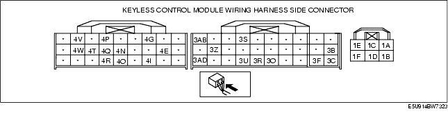

Workshop Manual ➭ BODY & ACCESSORIES ➭ SECURITY AND LOCKS ➭ KEYLESS CONTROL MODULE INSPECTION [WITH KEYLESS ENTRY SYSTEM]
KEYLESS CONTROL MODULE INSPECTION [WITH KEYLESS ENTRY SYSTEM]
id0914008064b4
{: #wp1059779}
- Measure the voltage or inspect for continuity according to the Terminal Voltage Table (Reference).
• If the voltage is not as specified in the Terminal Voltage Table (Reference), inspect the parts under "Inspection item(s)" and related wiring harnesses.
Terminal Voltage Table (Reference)

|
Signal name {: #wp1059993} |
Connected to {: #wp1059995} |
Measured condition {: #wp1059997} |
Voltage (V)/Continuity {: #wp1059999} |
Inspection item(s) {: #wp1060001} |
|
|---|---|---|---|---|---|
|
1A {: #wp1059837} |
Door lock control {: #wp1059839} |
Door lock actuator (driver-side) {: #wp1059895} |
Door lock actuator locking {: #wp1059898} |
1.0 or less → B+ → 1.0 or less {: #wp1059901} |
• Door lock actuator (driver-side) {: #wp1059904} • Related wiring harnesses {: #wp1060222} |
|
Other {: #wp1060041} |
1.0 or less {: #wp1060044} |
||||
|
1B {: #wp1060051} |
GND {: #wp1060054} |
GND {: #wp1060057} |
Under any condition: Inspect for continuity to GND. {: #wp1060060} |
Continuity detected {: #wp1060063} |
• Related wiring harnesses {: #wp1060066} |
|
1C {: #wp1060070} |
Door unlock control {: #wp1060073} |
Door lock actuator {: #wp1060076} |
Door lock actuator unlocking {: #wp1060079} |
1.0 or less → B+ → 1.0 or less {: #wp1060082} |
• Door lock actuator {: #wp1060085} • Related wiring harnesses {: #wp1060320} |
|
Other {: #wp1060098} |
1.0 or less {: #wp1060101} |
||||
|
1D {: #wp1060108} |
Door lock control {: #wp1060111} |
Door lock actuator {: #wp1060114} |
Door lock actuator locking {: #wp1060117} |
1.0 or less → B+ → 1.0 or less {: #wp1060120} |
• Door lock actuator {: #wp1060123} • Related wiring harnesses {: #wp1060380} |
|
Other {: #wp1060136} |
1.0 or less {: #wp1060139} |
||||
|
1E {: #wp1060398} |
Power supply {: #wp1060401} |
D.LOCK 20 A fuse {: #wp1060404} |
Under any condition {: #wp1060407} |
B+ {: #wp1060410} |
• D.LOCK 20 A fuse {: #wp1060413} • Battery {: #wp1060458} |
|
1F {: #wp1060466} |
Power supply {: #wp1060469} |
ROOM 15 A fuse {: #wp1060472} |
Under any condition {: #wp1060475} |
B+ {: #wp1060478} |
• ROOM 15 A fuse {: #wp1060481} • Battery {: #wp1060526} |
|
3B {: #wp1060534} |
IG1 {: #wp1060537} |
METER 15 A fuse {: #wp1060540} |
Ignition switch is at ON position {: #wp1060543} |
B+ {: #wp1060546} |
METER 15 A fuse {: #wp1060549} |
|
Ignition switch is at LOCK or ACC position {: #wp1060562} |
1.0 or less {: #wp1060565} |
||||
|
3C {: #wp1060613} |
GND {: #wp1060616} |
Body ground {: #wp1060619} |
Under any condition: Inspect for continuity to ground. {: #wp1060622} |
Continuity detected {: #wp1060625} |
GND {: #wp1060628} |
|
3F {: #wp1060662} |
Security light {: #wp1060665} |
Instrument cluster {: #wp1060668} |
Under any condition: Inspect for continuity to instrument cluster. {: #wp1060671} |
Continuity detected {: #wp1060674} |
Instrument cluster {: #wp1060677} |
|
3O {: #wp1060711} |
Key reminder switch {: #wp1060714} |
Steering lock unit {: #wp1060717} |
Key reminder switch is ON {: #wp1060720} |
B+ {: #wp1060723} |
Steering lock unit {: #wp1060726} |
|
Other {: #wp1060739} |
1.0 or less {: #wp1060742} |
||||
|
3R {: #wp1060790} |
Theft-deterrent siren signal {: #wp1060793} |
Theft-deterrent siren {: #wp1060796} |
Theft-deterrent system arming {: #wp1060799} (See Inspection Using an Oscilloscope (Reference).) {: #wp1060834} |
|
• Theft-deterrent siren {: #wp1060805} • Related wiring harnesses {: #wp1060867} |
|
3S {: #wp1060875} |
Power supply (keyless receiver) {: #wp1060878} |
Keyless receiver {: #wp1060881} |
Under any condition {: #wp1060884} |
B+ {: #wp1060887} |
Keyless receiver {: #wp1060890} |
|
3U {: #wp1060927} |
Communication (keyless receiver) {: #wp1060930} |
Keyless receiver {: #wp1060933} |
Under any condition: Inspect for continuity to keyless receiver. {: #wp1060936} |
Continuity detected {: #wp1060939} |
Keyless receiver {: #wp1060942} |
|
3Z {: #wp1060978} |
Trunk open signal {: #wp1060981} |
Trunk compartment light switch {: #wp1060984} |
Trunk lid open {: #wp1060987} (trunk compartment light switch on) {: #wp1061048} |
1.0 or less {: #wp1060990} |
• Trunk compartment light switch {: #wp1060993} • Related wiring harnesses {: #wp1061074} |
|
Trunk lid closed {: #wp1061008} (trunk compartment light switch off) {: #wp1061089} |
B+ {: #wp1061011} |
||||
|
3AB {: #wp1061099} |
Power supply (intruder sensor) {: #wp1061102} |
Intruder sensor {: #wp1061105} |
Under any condition {: #wp1061108} |
B+ {: #wp1061111} |
Intruder sensor {: #wp1061114} |
|
3AD {: #wp1061151} |
Communication (intruder sensor) {: #wp1061154} |
Intruder sensor {: #wp1061157} |
Under any condition: Inspect for continuity to steering lock unit. {: #wp1061160} |
Continuity detected {: #wp1061163} |
Intruder sensor {: #wp1061166} |
|
4E {: #wp1061202} |
Lock signal input {: #wp1061205} |
Door lock-link switch (driver-side) {: #wp1061208} |
Driver-side door is locked: Inspect for continuity to ground. {: #wp1061211} |
Continuity detected {: #wp1061214} |
Door lock-link switch (driver-side) {: #wp1061217} |
|
Driver-side door is unlocked: Inspect for continuity to ground. {: #wp1061232} |
No continuity {: #wp1061235} |
||||
|
4G {: #wp1061298} |
Lock/unlock input {: #wp1061301} |
Driver-side door key cylinder switch {: #wp1061304} |
At the moment key cylinder is locked {: #wp1061307} |
2.5 {: #wp1061310} |
• Driver-side door key cylinder switch {: #wp1061313} • Related wiring harnesses {: #wp1061411} |
|
At the moment key cylinder is unlocked {: #wp1061347} |
1.0 or less {: #wp1061350} |
||||
|
At the moment key cylinder is neutral position {: #wp1061328} |
5 {: #wp1061331} |
||||
|
4I {: #wp1061439} |
Unlock signal input {: #wp1061442} |
Door lock-link switch (driver-side) {: #wp1061445} |
Driver-side door is unlocked: Inspect for continuity to ground. {: #wp1061448} |
Continuity detected {: #wp1061451} |
Door lock-link switch (driver-side) {: #wp1061454} |
|
Driver-side door is locked: Inspect for continuity to ground. {: #wp1061469} |
No continuity {: #wp1061472} |
||||
|
4N {: #wp1061535} |
Hazard output {: #wp1061538} |
Hazard warning light {: #wp1061541} |
Press the LOCK button (transmitter) {: #wp1061544} |
B+→1.0 or less→B+ {: #wp1061547} |
• Hazard warning light {: #wp1061550} • Related wiring harnesses {: #wp1061647} |
|
Press the UNLOCK button (transmitter) {: #wp1061584} |
B+→1.0 or less→B+→1.0 or less→B+ {: #wp1061587} |
||||
|
Other {: #wp1061565} |
B+ {: #wp1061568} |
||||
|
4O {: #wp1061681} |
Trunk lid opener switch input {: #wp1061684} |
Trunk lid opener switch {: #wp1061687} |
Trunk lid opener switch on {: #wp1061690} |
B+ {: #wp1061693} |
• Trunk lid opener switch {: #wp1061696} • Related wiring harnesses {: #wp1061772} |
|
Trunk lid opener switch off {: #wp1061711} |
1.0 or less {: #wp1061714} |
||||
|
4P {: #wp1061790} |
Trunk open output {: #wp1061793} |
Trunk open relay {: #wp1061796} |
Press the trunk open switch {: #wp1061799} |
1.0 or less {: #wp1061802} |
• Trunk open relay {: #wp1061805} • Related wiring harnesses {: #wp1061880} |
|
Other {: #wp1061820} |
B+ {: #wp1061823} |
||||
|
4Q {: #wp1061899} |
Door switch signal (RH) output {: #wp1061902} |
Door switch {: #wp1061905} |
Door open (RH) {: #wp1061908} (Door switch on) {: #wp1061969} |
1.0 or less {: #wp1061911} |
• Door switch (RH) {: #wp1061914} • Related wiring harnesses {: #wp1061995} |
|
Door closed (RH) {: #wp1061929} (Door switch off) {: #wp1062010} |
B+ {: #wp1061932} |
||||
|
4R {: #wp1062020} |
Unlock signal input {: #wp1062023} |
Door lock-link switch (passenger-side) {: #wp1062026} |
Passenger-side door is unlocked: Inspect for continuity to ground. {: #wp1062029} |
Continuity detected {: #wp1062032} |
Door lock-link switch (passenger-side) {: #wp1062035} |
|
Passenger-side door is locked: Inspect for continuity to ground. {: #wp1062050} |
No continuity {: #wp1062053} |
||||
|
4T {: #wp1062116} |
Door switch signal (LH) output {: #wp1062119} |
Door switch {: #wp1062122} |
Door open (LH) {: #wp1062125} (Door switch on) {: #wp1062186} |
1.0 or less {: #wp1062128} |
• Door switch (LH) {: #wp1062131} • Related wiring harnesses {: #wp1062212} |
|
Door closed (LH) {: #wp1062146} (Door switch off) {: #wp1062227} |
B+ {: #wp1062149} |
||||
|
4V {: #wp1062237} |
Bonnet switch signal {: #wp1062240} |
Bonnet switch {: #wp1062243} |
Bonnet open {: #wp1062246} (Bonnet latch switch off) {: #wp1062307} |
B+ {: #wp1062249} |
• Bonnet latch switch {: #wp1062252} • Related wiring harnesses {: #wp1062334} |
|
Bonnet closed {: #wp1062267} (Bonnet latch switch on) {: #wp1062349} |
1.0 or less {: #wp1062270} |
||||
|
4W {: #wp1062358} |
Top lock switch signal {: #wp1062361} |
Top lock switch {: #wp1062364} |
Convertible top open {: #wp1062367} (Top lock switch on) {: #wp1062428} |
1.0 or less {: #wp1062370} |
• Top lock switch {: #wp1062373} • Related wiring harnesses {: #wp1062454} |
|
Convertible top closed {: #wp1062388} (Top lock switch off) {: #wp1062469} |
B+ {: #wp1062391} |
Inspection Using an Oscilloscope (Reference)
Intruder sensor signal
• Terminal connected: 5F (+)-Negative battery terminal {: #wp1062542}• Oscilloscope setting: 2 V/DIV (Y): 100 ms/DIV (X), DC range {: #wp1062560}• Measurement condition: Theft-deterrent system arming.